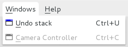
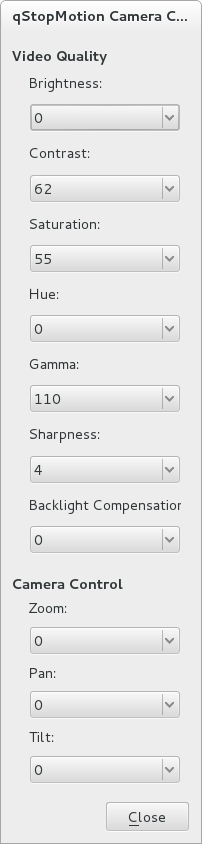

6. Controlling your camera
For some camera types it is possible to control the settings of the camera using the camera controller.
If your camera supports the camera control functionality, you can open the camera controller window by selecting the 'Camera Controller' entry in the 'Windows' menu.
Figure 6.1 The Windows menu

| In order to do that you have to turn off all other programs using the camera. |
On the right side of the qStopMotion window the camera control window will open.
Figure 6.2 The Camera Controller Window

When the camera is on you have two blocks of control possibilities, one block for the video quality of the camera and one for the camera control. These blocks have different number of controlls depending on the control capabilities of your camera.
- Video Quality
-
Yyy.
Yyy.
- Brightness: Xxx
- Contrast: Xxx
- Saturation: Xxx
- Camera Control
-
Yyy.
Yyy.
- Zoom: Xxx
- Pan: Xxx
- Tilt: Xxx